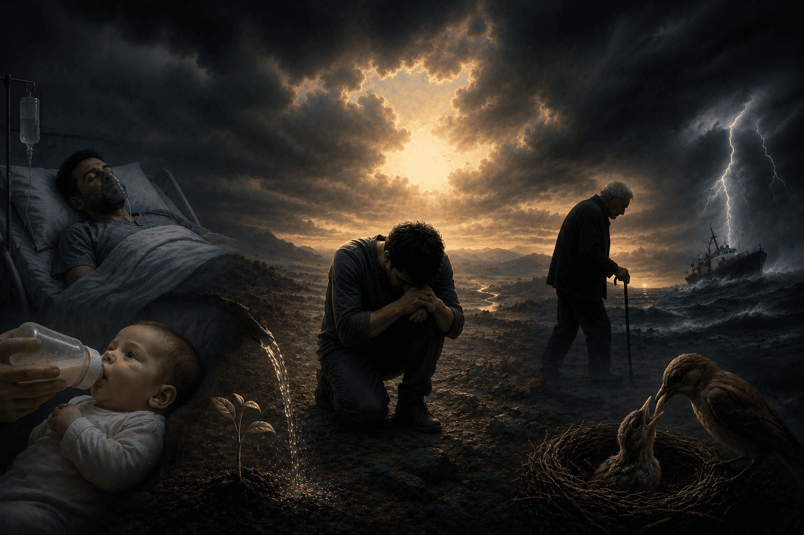
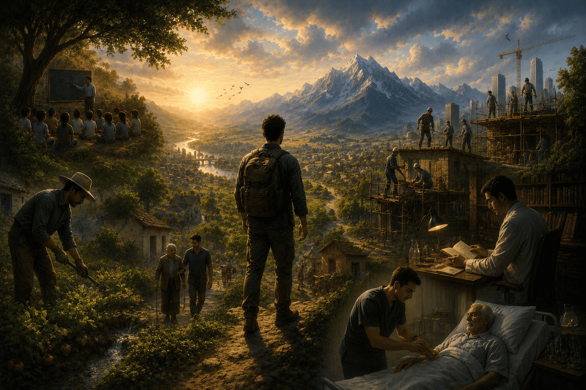
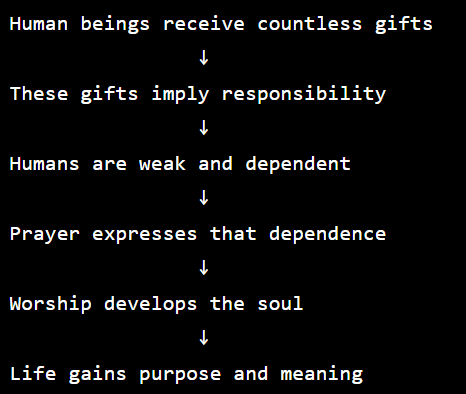

The Third Word of The Words by Imam Said Nursi explains why worship (ibadah) and prayer to God are necessary for human beings.
A common question it addresses is:
If God is self-sufficient and needs nothing, why should humans worship Him ?
Imam Nursi's answer is simple:
Worship is not for God's benefit; it's for the benefit of the human being.
Central Analogy: Soldier Training and Employment
Imam Nursi compares human life to a military assignment.
Imagine a soldier:
- receives equipment,
- receives provisions,
- is assigned a duty,
- is trained by a commander.
A wise soldier follows instructions and uses his equipment properly.
A foolish soldier ignores his duties and misuses what he has been given.
Similary, human beings have been given:
- life,
- intelligence,
- emotions,
- abilities,
- countless blessings.
Worship and prayer to God is the proper use of these gifts.
Just as training develops a soldier, worship and prayer develops the human soul.
Worship Is Not a Burden
One of Imam Nursi's key arguments is that worship is often misunderstood, many people imagine worship as:
- a restriction,
- an obligation imposed from outside,
- a loss of freedom.
Imam Nursi argues the opposite, true worship:
- aligns humans with their purpose,
- brings order to life,
- strengthens the soul,
- creates inner peace.

Human Beings Are Dependant
A recurring theme in The Words is human weakness, Humans cannot control:
- health,
- aging,
- death
- weather,
- much of their future.
Because of this dependence, prayer becomes natural.
Prayer is not merely asking for things, it's:
- recognizing one's need,
- acknowledging one's limitations,
- turning toward the One who possesses power.

Imam Nursi explains that all creation makes a kind of prayer, for example
- Seeds "pray" for trees through their potential.
- Young animals "pray" for sustenance through their need.
- Living things seek what they require to survive.
Human prayer is the conscious form of this universal dependence.
The Five Daily Prayers
The Third Word also reflects on the daily prayers (salat).
Nursi sees them as natural pauses that correspond to major transitions in life.
The prayer times remind people of:
- the passage of time,
- human mortality,
- God's continuous blessings.
Rather than interrupting life, prayer gives meaning to life.

One of Imam Nursi's most important points:
God gains nothing from our worship.
Instead:
- worship purifies the heart,
- gratitude enriches the soul,
- prayer brings awareness,
- remembrance of God creates peace.
The benefit returns entirely to the person.
The World as a Place of Duty
Imam Nursi describes earthly life as:
- a school,
- a field of testing,
- a place of service.
Human beings were not created merely to:
- eat,
- sleep,
- work,
- pursue pleasures.
They were created to know, appreciate, and worship their Creator.

Summary
The Third Word teaches that:
Worship is the natural response of a believing human being who recognizes both God's gifts and his own dependence.
Just as food nourishes the body, worship nourishes the soul.
